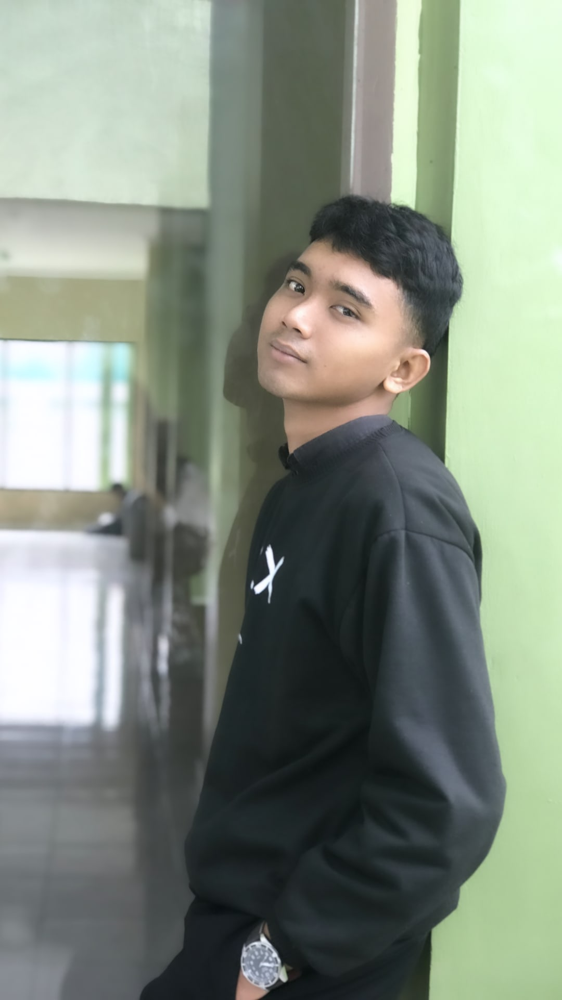

|  | MY BIOGRAPHY |
|---|---|
|
|
| ABOUT ME | |
|
As an enthusiastic IT student with a deep passion for coding and design, I am committed to creating intuitive and engaging web interfaces. With a solid academic background and practical experience, including a GPA of 3.57 over 4 semesters, I aspire to become a skilled Front-End Developer, blending creativity with functionality to deliver outstanding web solutions. I have honed my skills in HTML, CSS, and JavaScript during my studies and am continually deepening my knowledge of modern frameworks and tools such as Bootstrap and Tailwind. My experience includes building various projects, from simple web pages to dynamic, responsive e-commerce websites, each enhancing my expertise in front-end development. I am excited to tackle technical challenges and turn innovative ideas into digital reality. My primary goal is to create user experiences that are not only aesthetically pleasing but also function seamlessly across different devices. With my skills, academic achievements, and dedication, I am ready to contribute to remote projects and collaborate with forward-thinking teams. Currently, I am seeking remote work opportunities to apply my knowledge and expand my expertise in a flexible environment. Let’s connect and explore how we can build innovative and impactful web solutions together! |
|
| SOCIAL MEDIA | |
|
check me out on : |
|